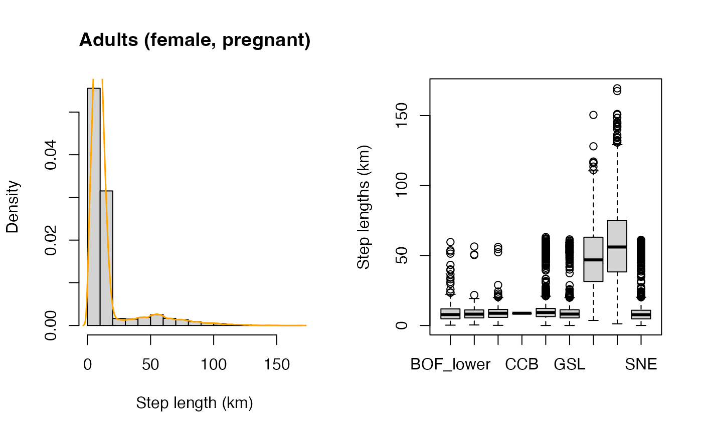

Getting started
Phil Bouchet, Enrico Pirotta, Len Thomas, Catriona Harris
Centre for Research into Ecological & Environmental Modelling, University of St Andrews2023-03-14
narwind.RmdPreamble
This vignette illustrates the use of the narwind R
package, which provides methods to forecast the abundance of critically
endangered North Atlantic right whales (NARW, Eubalaena
glacialis) under user-specified offshore wind development
scenarios. The package offers an implementation of the
spatially-explicit bioenergetic model described in [placeholder
reference], whereby the movements of different NARW cohorts
(juveniles, adult males, pregnant females, resting females, lactating
females) are simulated across an entire calendar year. The package
operates at a daily scale and accounts for the effects of multiple
anthropogenic stressors affecting NARW health, reproduction, and
survival, namely: (1) direct mortality from vessel strikes, (2)
behavioral responses to noise exposure leading to cessation of
foraging/nursing activities, and (3) increased energetic costs
associated with entanglement in fishing gear.
Package installation
The latest development version of narwind can be
installed from GitHub. This requires either the remotes
or the devtools
package to be pre-installed.
# install.packages("remotes")
remotes::install_github("pjbouchet/narwind") # OR
# install.packages("devtools")
devtools::install_github("pjbouchet/narwind")Overview
This vignette covers all the steps required to run the bioenergetic model and make predictions of right whale abundance over a future time span of interest. This includes:
- Loading the package and compiling the necessary model code
- Running simulations using the
narwfunction. - Inspecting outputs using the
printmethod. - Generating summary statistics, simulation diagnostics, and maps
using the
summaryandplotmethods. - Forecasting population size using the
predictmethod.
narwind relies on multiple data inputs, including:
The package contains proxy surfaces for all of these, allowing analyses to be carried out out of the box.
Example analysis
Note: In R, the
help()function and?help operator provide access to the documentation pages for package functions, datasets, or other objects. To access documentation for the standardlm(linear model) function, for instance, enter the commandhelp(lm)orhelp("lm"), or?lmor?"lm"(i.e., the quotes are optional).
Loading the package
The first step is to load the package. This is done using the
library command, which prints a welcome message with basic
information in the R console:
devtools::load_all()
#> ℹ Loading narwind
#> -----------------------------------------------------------------------------------
#> Population Effects of Offshore Wind Development on North Atlantic Right Whales
#> -----------------------------------------------------------------------------------
#> narwind: version 1.0
#> Package developed under funding from the U.S. Bureau of Ocean Energy Management
#> (BOEM Contract No. 140M0121C0008)
#>
#> For more information, see the package website at:
#> https://pjbouchet.github.io/narwind/index.html
#> Warning: ── Conflicts ────────────────────────────────────────────── narwind conflicts
#> ──
#> ✖ `narw` masks `narwind::narw()`.
#> ℹ Did you accidentally source a file rather than using `load_all()`?
#> Run `rm(list = c("narw"))` to remove the conflicts.Note:
narwindis largely written in C++, i.e., a high-level, general-purpose programming language often used in high-performance applications. C++ is a compiled language, meaning that any source code must first be converted into machine-readable code before execution. This compilation process results in an executable file, which can be translated as R functions. This step is automatically performed in the background as part of thelibrarycall above.
Running the model
The bioenergetic model is run by calling the narw()
function. The number of simulated animals per cohort, nsim,
is the only mandatory argument; all others are optional and set to
default values.
# Simulate 20 juvenile females and store the outputs in an object called 'm'
# This is the same as m <- narw(20,2)
m <- narw(nsim = 20, cohort = 2)
#> -------------------------------------------------------------
#> -------------------------------------------------------------
#>
#> NORTH ATLANTIC RIGHT WHALE (Eubalaena glacialis)
#>
#> --- BIOENERGETIC MODEL ---
#>
#> -------------------------------------------------------------
#> -------------------------------------------------------------
#>
#> Starting up ...
#> Running simulations ...
#>
#> Done!
#> Time elapsed: 00:00:02The arguments that can be passed to narw() are listed
below.
| Argument | Default value | Description |
|---|---|---|
nsim |
1000 |
Positive integer. Number of simulated animals. |
scenario |
NULL |
An optional object of class narw.scenario, as returned
by scenario() function. |
cohort |
1:6 |
Integer between 1 and 6. Unique identifier for population
cohorts. Defaults to all cohorts. Note that calves are simulated
simultaneously with their mothers when 1: Juveniles (male) |
n.cores |
NULL |
Positive integer. Number of CPU cores to use in parallel processing.
The default value of NULL detects the processor
configuration and sets up computations to run on the maximum allowable
number of available cores. |
progress |
TRUE |
Logical. If TRUE, a progress bar is shown during
execution. |
The resulting object is of class narwsim:
class(m)[1]
#> [1] "narwsim"Viewing outputs
Outputs from the simulator can be viewed using the
print() method. This is as simple as typing the model
object name (m) and pressing [enter]. The
default behavior here is to return data for the first animal, only
showing the first 4 days of the simulation. This can be easily changed
by the user, as demonstrated below:
# Default overview - same as print(m)
m
#> =========================================================================================
#> Juveniles (female)
#> =========================================================================================
#>
#> --------------------------
#> Locations
#> --------------------------
#> date easting northing region
#> 1: 2022-02-01 -304.5000 -358.5000 SEUS
#> 2: 2022-02-02 -303.4106 -362.5748 SEUS
#> 3: 2022-02-03 -310.0505 -361.5170 SEUS
#> 4: 2022-02-04 -316.1248 -358.1293 SEUS
#>
#> --------------------------
#> Attributes
#> --------------------------
#> cohort alive age bc length length_a length_b length_c
#> 1: 2 1 1.056283 0.1163650 10.57181 1346.343 -0.3025861 -0.2123623
#> 2: 2 1 1.059023 0.1149463 10.57330 1346.343 -0.3025861 -0.2123623
#> 3: 2 1 1.061763 0.1137619 10.57479 1346.343 -0.3025861 -0.2123623
#> 4: 2 1 1.064502 0.1125326 10.57627 1346.343 -0.3025861 -0.2123623
#> mass leanmass fatmass mass_a mass_b mouth_r mouth_a mouth_w
#> 1: 13806.16 12199.61 1606.554 -4.990869 3.046771 0.1533258 76.7 1.620704
#> 2: 13789.94 12204.84 1585.102 -4.990869 3.046771 0.1533258 76.7 1.620704
#> 3: 13777.41 12210.07 1567.345 -4.990869 3.046771 0.1533258 76.7 1.620704
#> 4: 13764.22 12215.29 1548.923 -4.990869 3.046771 0.1533258 76.7 1.620704
#>
#> --------------------------
#> Stressors
#> --------------------------
#> is_entgl entgl_head severity entgl_d entgl_start entgl_end strike noise
#> 1: 0 0 0 0 0 0 0 0
#> 2: 0 0 0 0 0 0 0 0
#> 3: 0 0 0 0 0 0 0 0
#> 4: 0 0 0 0 0 0 0 0
#> dB_thresh
#> 1: 118.5737
#> 2: 167.4346
#> 3: 159.9419
#> 4: 140.8414
#>
#> --------------------------
#> Activity budgets
#> --------------------------
#> d_travel swimspeed t_travel t_feed t_nurse t_rest n_zero t_sum
#> 1: 4.217875 1165.617 11.143287 0 0 12.85671 2 8.950577
#> 2: 6.723597 3844.388 10.042306 0 0 13.95769 2 7.413264
#> 3: 6.955189 4156.420 9.706716 0 0 14.29328 2 7.933290
#> 4: 7.450508 1175.738 12.937167 0 0 11.06283 2 10.799420
#> t_remain
#> 1: 7.524712
#> 2: 8.293368
#> 3: 8.033355
#> 4: 6.600290
#>
#> --------------------------
#> Growth
#> --------------------------
#> E_tot E_in E_out delta_fat DE_lip ED_lip lip_anab lip_catab
#> 1: -1858.162 0 1858.162 -20.71447 0.75 39 0.8 0.5796871
#> 2: -1883.293 0 1883.293 -21.45130 0.75 39 0.8 0.5922964
#> 3: -1665.710 0 1665.710 -17.75769 0.75 39 0.8 0.5543582
#> 4: -1782.789 0 1782.789 -18.42166 0.75 39 0.8 0.5373187
#>
#> --------------------------
#> Energy intake
#> --------------------------
#> feed preyconc minprey gape feedspeed captEff impedance daylight
#> 1: 0 4.895215e-16 2125.0407 1.250099 0.9180476 0.9635123 0.0000000 11.10417
#> 2: 0 4.902246e-16 2244.3347 1.250554 0.8415939 0.9289582 0.4796429 11.10611
#> 3: 0 3.810831e-16 2129.4237 1.251009 1.1161447 0.7843389 0.1507610 11.10611
#> 4: 0 2.947338e-16 551.8388 1.251464 1.2892835 0.8845850 0.1288770 11.10417
#> feed_effort targetBC cop_mass cop_kJ digestEff metabEff
#> 1: 0.9644193 0.5271131 0.0006052226 0.02909872 0.8831865 0.6933464
#> 2: 0.9657929 0.5271131 0.0003650234 0.02155693 0.8896582 0.7851157
#> 3: 0.9671644 0.5271131 0.0004351877 0.02695738 0.8826913 0.7611081
#> 4: 0.9682696 0.5271131 0.0002557666 0.02536387 0.8898719 0.7395924
#> E_cop
#> 1: 1.078429e-05
#> 2: 5.496224e-06
#> 3: 7.881511e-06
#> 4: 4.269522e-06
#>
#> --------------------------
#> Energy costs
#> --------------------------
#> rmr LC stroke E_growth
#> 1: 203.4899 1654.598 0.1504728 0.07387383
#> 2: 203.5481 1679.671 0.1530659 0.07354740
#> 3: 203.6063 1462.030 0.1335188 0.07320944
#> 4: 203.6644 1579.052 0.1444452 0.07292552
# First 20 days of the simulation for the fifth whle
print(m, 20, 5)
#> =========================================================================================
#> Juveniles (female)
#> =========================================================================================
#>
#> --------------------------
#> Locations
#> --------------------------
#> date easting northing region
#> 1: 2022-02-01 -304.5000 -358.5000 SEUS
#> 2: 2022-02-02 -303.4106 -362.5748 SEUS
#> 3: 2022-02-03 -310.0505 -361.5170 SEUS
#> 4: 2022-02-04 -316.1248 -358.1293 SEUS
#> 5: 2022-02-05 -308.7811 -356.8724 SEUS
#> 6: 2022-02-06 -309.9738 -361.2708 SEUS
#> 7: 2022-02-07 -310.6000 -360.3543 SEUS
#> 8: 2022-02-08 -306.6254 -361.0909 SEUS
#> 9: 2022-02-09 -308.6672 -367.2664 SEUS
#> 10: 2022-02-10 -308.0842 -367.8879 SEUS
#> 11: 2022-02-11 -307.8326 -361.2013 SEUS
#> 12: 2022-02-12 -304.0365 -367.8498 SEUS
#> 13: 2022-02-13 -302.4723 -368.4150 SEUS
#> 14: 2022-02-14 -300.7611 -368.9860 SEUS
#> 15: 2022-02-15 -297.1766 -373.1762 SEUS
#> 16: 2022-02-16 -299.4397 -370.8988 SEUS
#> 17: 2022-02-17 -302.2272 -364.7324 SEUS
#> 18: 2022-02-18 -311.5815 -373.6513 SEUS
#> 19: 2022-02-19 -313.1626 -373.3965 SEUS
#> 20: 2022-02-20 -307.1061 -369.6602 SEUS
#>
#> --------------------------
#> Attributes
#> --------------------------
#> cohort alive age bc length length_a length_b length_c
#> 1: 2 1 1.056283 0.11636496 10.57181 1346.343 -0.3025861 -0.2123623
#> 2: 2 1 1.059023 0.11494628 10.57330 1346.343 -0.3025861 -0.2123623
#> 3: 2 1 1.061763 0.11376192 10.57479 1346.343 -0.3025861 -0.2123623
#> 4: 2 1 1.064502 0.11253260 10.57627 1346.343 -0.3025861 -0.2123623
#> 5: 2 1 1.067242 0.11113412 10.57776 1346.343 -0.3025861 -0.2123623
#> 6: 2 1 1.069982 0.10984696 10.57924 1346.343 -0.3025861 -0.2123623
#> 7: 2 1 1.072722 0.10871263 10.58073 1346.343 -0.3025861 -0.2123623
#> 8: 2 1 1.075461 0.10761757 10.58221 1346.343 -0.3025861 -0.2123623
#> 9: 2 1 1.078201 0.10645276 10.58369 1346.343 -0.3025861 -0.2123623
#> 10: 2 1 1.080941 0.10528702 10.58517 1346.343 -0.3025861 -0.2123623
#> 11: 2 1 1.083680 0.10397753 10.58665 1346.343 -0.3025861 -0.2123623
#> 12: 2 1 1.086420 0.10267824 10.58813 1346.343 -0.3025861 -0.2123623
#> 13: 2 1 1.089160 0.10127819 10.58961 1346.343 -0.3025861 -0.2123623
#> 14: 2 1 1.091900 0.09983364 10.59109 1346.343 -0.3025861 -0.2123623
#> 15: 2 1 1.094639 0.09820979 10.59257 1346.343 -0.3025861 -0.2123623
#> 16: 2 1 1.097379 0.09683749 10.59405 1346.343 -0.3025861 -0.2123623
#> 17: 2 1 1.100119 0.09515892 10.59553 1346.343 -0.3025861 -0.2123623
#> 18: 2 1 1.102859 0.09353836 10.59700 1346.343 -0.3025861 -0.2123623
#> 19: 2 1 1.105598 0.09200031 10.59848 1346.343 -0.3025861 -0.2123623
#> 20: 2 1 1.108338 0.09048484 10.59995 1346.343 -0.3025861 -0.2123623
#> mass leanmass fatmass mass_a mass_b mouth_r mouth_a mouth_w
#> 1: 13806.16 12199.61 1606.554 -4.990869 3.046771 0.1533258 76.7 1.620704
#> 2: 13789.94 12204.84 1585.102 -4.990869 3.046771 0.1533258 76.7 1.620704
#> 3: 13777.41 12210.07 1567.345 -4.990869 3.046771 0.1533258 76.7 1.620704
#> 4: 13764.22 12215.29 1548.923 -4.990869 3.046771 0.1533258 76.7 1.620704
#> 5: 13748.44 12220.52 1527.921 -4.990869 3.046771 0.1533258 76.7 1.620704
#> 6: 13734.43 12225.74 1508.685 -4.990869 3.046771 0.1533258 76.7 1.620704
#> 7: 13722.81 12230.97 1491.843 -4.990869 3.046771 0.1533258 76.7 1.620704
#> 8: 13711.83 12236.19 1475.633 -4.990869 3.046771 0.1533258 76.7 1.620704
#> 9: 13699.80 12241.42 1458.381 -4.990869 3.046771 0.1533258 76.7 1.620704
#> 10: 13687.78 12246.64 1441.146 -4.990869 3.046771 0.1533258 76.7 1.620704
#> 11: 13673.61 12251.86 1421.748 -4.990869 3.046771 0.1533258 76.7 1.620704
#> 12: 13659.62 12257.08 1402.546 -4.990869 3.046771 0.1533258 76.7 1.620704
#> 13: 13644.15 12262.30 1381.855 -4.990869 3.046771 0.1533258 76.7 1.620704
#> 14: 13628.06 12267.52 1360.538 -4.990869 3.046771 0.1533258 76.7 1.620704
#> 15: 13609.30 12272.73 1336.567 -4.990869 3.046771 0.1533258 76.7 1.620704
#> 16: 13594.40 12277.95 1316.448 -4.990869 3.046771 0.1533258 76.7 1.620704
#> 17: 13574.95 12283.17 1291.777 -4.990869 3.046771 0.1533258 76.7 1.620704
#> 18: 13556.43 12288.38 1268.046 -4.990869 3.046771 0.1533258 76.7 1.620704
#> 19: 13539.21 12293.60 1245.611 -4.990869 3.046771 0.1533258 76.7 1.620704
#> 20: 13522.38 12298.81 1223.571 -4.990869 3.046771 0.1533258 76.7 1.620704
#>
#> --------------------------
#> Stressors
#> --------------------------
#> is_entgl entgl_head severity entgl_d entgl_start entgl_end strike noise
#> 1: 0 0 0 0 0 0 0 0
#> 2: 0 0 0 0 0 0 0 0
#> 3: 0 0 0 0 0 0 0 0
#> 4: 0 0 0 0 0 0 0 0
#> 5: 0 0 0 0 0 0 0 0
#> 6: 0 0 0 0 0 0 0 0
#> 7: 0 0 0 0 0 0 0 0
#> 8: 0 0 0 0 0 0 0 0
#> 9: 0 0 0 0 0 0 0 0
#> 10: 0 0 0 0 0 0 0 0
#> 11: 0 0 0 0 0 0 0 0
#> 12: 0 0 0 0 0 0 0 0
#> 13: 0 0 0 0 0 0 0 0
#> 14: 1 1 0 74 14 88 0 0
#> 15: 1 1 0 74 14 88 0 0
#> 16: 1 1 0 74 14 88 0 0
#> 17: 1 1 0 74 14 88 0 0
#> 18: 1 1 0 74 14 88 0 0
#> 19: 1 1 0 74 14 88 0 0
#> 20: 1 1 0 74 14 88 0 0
#> dB_thresh
#> 1: 118.57372
#> 2: 167.43461
#> 3: 159.94190
#> 4: 140.84137
#> 5: 118.52974
#> 6: 136.22029
#> 7: 136.22029
#> 8: 153.98780
#> 9: 159.56647
#> 10: 189.66647
#> 11: 156.52229
#> 12: 131.43006
#> 13: 95.19268
#> 14: 170.85562
#> 15: 136.01527
#> 16: 165.48311
#> 17: 143.58012
#> 18: 176.71037
#> 19: 129.42640
#> 20: 118.82023
#>
#> --------------------------
#> Activity budgets
#> --------------------------
#> d_travel swimspeed t_travel t_feed t_nurse t_rest n_zero t_sum
#> 1: 4.2178748 1165.6175 11.143287 0 0 12.85671 2 8.950577
#> 2: 6.7235974 3844.3883 10.042306 0 0 13.95769 2 7.413264
#> 3: 6.9551891 4156.4196 9.706716 0 0 14.29328 2 7.933290
#> 4: 7.4505081 1175.7381 12.937167 0 0 11.06283 2 10.799420
#> 5: 4.5572353 897.8033 11.442823 0 0 12.55718 2 11.266323
#> 6: 1.1099646 3980.4196 9.458782 0 0 14.54122 2 5.640149
#> 7: 4.0422540 2059.2480 10.360258 0 0 13.63974 2 7.205435
#> 8: 6.5043161 3428.5390 9.703326 0 0 14.29667 2 8.387568
#> 9: 0.8521404 1836.0705 9.466974 0 0 14.53303 2 5.994273
#> 10: 6.6913813 2103.0010 10.715609 0 0 13.28439 2 8.932432
#> 11: 7.6558884 1600.6345 11.644990 0 0 12.35501 2 10.276087
#> 12: 1.6631368 4435.7388 9.578987 0 0 14.42101 2 5.591906
#> 13: 1.8039571 2389.2298 9.148448 0 0 14.85155 2 7.213178
#> 14: 5.5141990 1858.3761 10.722163 0 0 13.27784 2 8.490102
#> 15: 3.2106284 1509.5258 10.535657 0 0 13.46434 2 7.182510
#> 16: 6.7671720 4450.2663 9.587592 0 0 14.41241 2 7.866060
#> 17: 12.9248074 5193.1853 10.955078 0 0 13.04492 2 7.067446
#> 18: 1.6015772 3947.7949 9.819897 0 0 14.18010 2 5.171585
#> 19: 7.1162679 2302.6882 10.518596 0 0 13.48140 2 9.143643
#> 20: 4.8665765 3397.0581 9.409577 0 0 14.59042 2 8.046017
#> t_remain
#> 1: 7.524712
#> 2: 8.293368
#> 3: 8.033355
#> 4: 6.600290
#> 5: 6.366838
#> 6: 9.179926
#> 7: 8.397283
#> 8: 7.806216
#> 9: 9.002863
#> 10: 7.533784
#> 11: 6.861956
#> 12: 9.204047
#> 13: 8.393411
#> 14: 7.754949
#> 15: 8.408745
#> 16: 8.066970
#> 17: 8.466277
#> 18: 9.414208
#> 19: 7.428179
#> 20: 7.976991
#>
#> --------------------------
#> Growth
#> --------------------------
#> E_tot E_in E_out delta_fat DE_lip ED_lip lip_anab lip_catab
#> 1: -1858.162 0 1858.162 -20.71447 0.75 39 0.8 0.5796871
#> 2: -1883.293 0 1883.293 -21.45130 0.75 39 0.8 0.5922964
#> 3: -1665.710 0 1665.710 -17.75769 0.75 39 0.8 0.5543582
#> 4: -1782.789 0 1782.789 -18.42166 0.75 39 0.8 0.5373187
#> 5: -1857.658 0 1857.658 -21.00234 0.75 39 0.8 0.5879026
#> 6: -1797.851 0 1797.851 -19.23535 0.75 39 0.8 0.5563520
#> 7: -1597.993 0 1597.993 -16.84240 0.75 39 0.8 0.5480656
#> 8: -1524.987 0 1524.987 -16.20971 0.75 39 0.8 0.5527291
#> 9: -1655.809 0 1655.809 -17.25220 0.75 39 0.8 0.5417983
#> 10: -1556.688 0 1556.688 -17.23525 0.75 39 0.8 0.5757305
#> 11: -1757.730 0 1757.730 -19.39806 0.75 39 0.8 0.5738647
#> 12: -1825.752 0 1825.752 -19.20154 0.75 39 0.8 0.5468871
#> 13: -1794.557 0 1794.557 -20.69114 0.75 39 0.8 0.5995570
#> 14: -1942.162 0 1942.162 -21.31672 0.75 39 0.8 0.5707399
#> 15: -2100.555 0 2100.555 -23.97173 0.75 39 0.8 0.5934288
#> 16: -1944.481 0 1944.481 -20.11916 0.75 39 0.8 0.5380337
#> 17: -2335.693 0 2335.693 -24.67046 0.75 39 0.8 0.5492434
#> 18: -2252.408 0 2252.408 -23.73089 0.75 39 0.8 0.5478611
#> 19: -1975.799 0 1975.799 -22.43476 0.75 39 0.8 0.5904485
#> 20: -2073.756 0 2073.756 -22.04077 0.75 39 0.8 0.5526783
#>
#> --------------------------
#> Energy intake
#> --------------------------
#> feed preyconc minprey gape feedspeed captEff impedance
#> 1: 0 4.895215e-16 2125.0407 1.250099 0.9180476 0.9635123 0.000000000
#> 2: 0 4.902246e-16 2244.3347 1.250554 0.8415939 0.9289582 0.479642898
#> 3: 0 3.810831e-16 2129.4237 1.251009 1.1161447 0.7843389 0.150760967
#> 4: 0 2.947338e-16 551.8388 1.251464 1.2892835 0.8845850 0.128876971
#> 5: 0 3.805408e-16 1553.0683 1.251919 0.7716268 0.8860393 0.029894485
#> 6: 0 3.810831e-16 622.9668 1.252374 1.1412285 0.8819864 0.198621948
#> 7: 0 3.805408e-16 1987.2803 1.252829 1.3393158 0.9059477 0.117007026
#> 8: 0 4.902246e-16 1960.5896 1.253283 0.9428478 0.9303722 0.486851102
#> 9: 0 3.814962e-16 2289.4796 1.253738 1.0833596 0.8485016 0.181805466
#> 10: 0 3.814962e-16 2501.1340 1.254193 0.9591592 0.9214849 0.083306876
#> 11: 0 3.810831e-16 2623.2678 1.254647 1.3479817 0.9377101 0.005084504
#> 12: 0 4.908088e-16 1135.1944 1.255102 0.8962177 0.8708520 0.219489789
#> 13: 0 4.908088e-16 2093.9173 1.255556 0.9237650 0.8813484 0.151467584
#> 14: 0 6.311297e-16 1864.9538 1.256010 0.8549820 0.8964837 0.317836303
#> 15: 0 6.318300e-16 2853.9134 1.256465 1.1623483 0.9439280 0.116585953
#> 16: 0 6.311297e-16 1121.6995 1.256919 0.8668260 0.8734394 0.257836941
#> 17: 0 4.902246e-16 2355.1878 1.257373 0.5056009 0.9647819 0.161641440
#> 18: 0 3.819092e-16 1840.2873 1.257827 0.9541902 0.8860990 0.480783723
#> 19: 0 2.957365e-16 2086.1270 1.258281 1.1732464 0.9495363 0.322532645
#> 20: 0 3.814962e-16 2095.5213 1.258735 0.5906773 0.9540674 0.222219704
#> daylight feed_effort targetBC cop_mass cop_kJ digestEff metabEff
#> 1: 11.10417 0.9644193 0.5271131 0.0006052226 0.02909872 0.8831865 0.6933464
#> 2: 11.10611 0.9657929 0.5271131 0.0003650234 0.02155693 0.8896582 0.7851157
#> 3: 11.10611 0.9671644 0.5271131 0.0004351877 0.02695738 0.8826913 0.7611081
#> 4: 11.10417 0.9682696 0.5271131 0.0002557666 0.02536387 0.8898719 0.7395924
#> 5: 11.10444 0.9693796 0.5271131 0.0003651410 0.02295970 0.8870151 0.7695434
#> 6: 11.10611 0.9705976 0.5271131 0.0002911837 0.02415392 0.8860914 0.7756696
#> 7: 11.10444 0.9716781 0.5271131 0.0004261993 0.02541201 0.8899124 0.7544631
#> 8: 11.10611 0.9725989 0.5271131 0.0004239394 0.01832820 0.8881687 0.7387756
#> 9: 11.10778 0.9734609 0.5271131 0.0003525849 0.02784863 0.8774220 0.7670604
#> 10: 11.10778 0.9743494 0.5271131 0.0003635809 0.02257809 0.8922781 0.8239921
#> 11: 11.10611 0.9752102 0.5271131 0.0003519319 0.02455647 0.8834812 0.6770983
#> 12: 11.10806 0.9761443 0.5271131 0.0004457770 0.02065075 0.8975171 0.6951573
#> 13: 11.10806 0.9770379 0.5271131 0.0003204986 0.02438806 0.8871767 0.6375143
#> 14: 11.10778 0.9779649 0.5271131 0.0004018872 0.02290323 0.8933097 0.7977275
#> 15: 11.10972 0.9788837 0.5271131 0.0004471339 0.02017955 0.8920583 0.7991743
#> 16: 11.10778 0.9798727 0.5271131 0.0004593390 0.02393283 0.8855352 0.7400076
#> 17: 11.10611 0.9806736 0.5271131 0.0002458446 0.02308587 0.8821986 0.7624401
#> 18: 11.10972 0.9816116 0.5271131 0.0003722884 0.02662202 0.8760612 0.6907606
#> 19: 11.10972 0.9824755 0.5271131 0.0006794176 0.02497307 0.8795912 0.7715363
#> 20: 11.10778 0.9832591 0.5271131 0.0003269556 0.02410640 0.8844018 0.7934193
#> E_cop
#> 1: 1.078429e-05
#> 2: 5.496224e-06
#> 3: 7.881511e-06
#> 4: 4.269522e-06
#> 5: 5.722568e-06
#> 6: 4.834037e-06
#> 7: 7.271716e-06
#> 8: 5.098374e-06
#> 9: 6.608541e-06
#> 10: 6.035475e-06
#> 11: 5.169798e-06
#> 12: 5.743536e-06
#> 13: 4.420827e-06
#> 14: 6.559301e-06
#> 15: 6.432559e-06
#> 16: 7.203928e-06
#> 17: 3.817500e-06
#> 18: 5.997669e-06
#> 19: 1.151452e-05
#> 20: 5.530615e-06
#>
#> --------------------------
#> Energy costs
#> --------------------------
#> rmr LC stroke E_growth
#> 1: 203.4899 1654.598 0.1504728 0.07387383
#> 2: 203.5481 1679.671 0.1530659 0.07354740
#> 3: 203.6063 1462.030 0.1335188 0.07320944
#> 4: 203.6644 1579.052 0.1444452 0.07292552
#> 5: 203.7226 1653.863 0.1515534 0.07263132
#> 6: 203.7807 1593.998 0.1463737 0.07229825
#> 7: 203.8388 1394.082 0.1282542 0.07199088
#> 8: 203.8969 1321.018 0.1217202 0.07171875
#> 9: 203.9550 1451.783 0.1339646 0.07145572
#> 10: 204.0131 1352.604 0.1250128 0.07117671
#> 11: 204.0711 1553.588 0.1438185 0.07089756
#> 12: 204.1291 1621.552 0.1503940 0.07058541
#> 13: 204.1872 1590.300 0.1477709 0.07027569
#> 14: 204.2451 1489.025 0.1386467 0.06994289
#> 15: 204.3031 1647.360 0.1537203 0.06959994
#> 16: 204.3611 1491.229 0.1395011 0.06921588
#> 17: 204.4190 1882.383 0.1764447 0.06888972
#> 18: 204.4769 1799.040 0.1690735 0.06849328
#> 19: 204.5348 1522.374 0.1434288 0.06811027
#> 20: 204.5927 1620.273 0.1530064 0.06774632The print() method has the following arguments:
| Argument | Default value | Description |
|---|---|---|
obj |
- |
Input model object, as returned by narw(). |
rows |
4 |
Positive integer, or vector of positive integers indicating which
days of the simulation should be displayed. Defaults to 4,
which returns data for days 1, 2, 3, 4. |
whale |
1 |
Positive integer indicating the individual for which data should be extracted. |
Summarizing outputs
The summary() method provides a range of diagnostics for
assessing how simulated whale behavior aligns with biological
expectations. These include1:
- A breakdown of mortality by cohort, region, and cause of death.
- A tally of daily locations by cohort, region and country (U.S. vs. Canada).
- A summary of spatial movements, at both daily (
step) and annual (migration) scales. The proportion of animals that reached either migratory endpoint (i.e., the SEUS calving grounds and the Gulf of St Lawrence feeding grounds) is also reported for each cohort. - A summary of occupancy rates and residency times in each region, per cohort.
- An overview of activity budgets, i.e., mean (± SD) time spent (hrs) engaging in each of the four categories of behavior considered in the model (traveling, resting, nursing, and feeding), by region.
- Time series of individual body conditions, by cohort.
Several plots are also produced to illustrate
summary(m)
#> -------------------------------------------------------------
#> -------------------------------------------------------------
#>
#> NORTH ATLANTIC RIGHT WHALE (Eubalaena glacialis)
#>
#> --- MODEL SUMMARY ---
#>
#> -------------------------------------------------------------
#> -------------------------------------------------------------
#>
#> BOF: Bay of Fundy (lower, upper)
#> CABOT: Cabot Strait
#> CCB: Cape Cod Bay
#> GOM: Gulf of Maine and Georges Bank
#> GSL: Gulf of St Lawrence
#> MIDA: Mid-Atlantic
#> SCOS: Scotian Shelf
#> SEUS: South-east United States
#> SNE: Southern New England
#>
#> =============================================================
#> SIMULATIONS
#> =============================================================
#>
#> No. animals: 20
#>
#> Cohort(s):
#> Juveniles (female)
#>
#> Simulation start: February
#>
#> =============================================================
#> MORTALITY & HEALTH
#> =============================================================
#>
#> cohort dead alive
#> -------- ------------ ---------
#> jv(fml) 100.0% (20) 0.0% (0)
#> --- jv(fml) ---
#>
#> region strike starve
#> ------- ------- -----------
#> GSL - (0) 5.0% (1)
#> MIDA - (0) 20.0% (4)
#> SCOS - (0) 10.0% (2)
#> SEUS - (0) 50.0% (10)
#> SNE - (0) 15.0% (3)
#> =============================================================
#> LOCATIONS
#> =============================================================
#>
#> region jv(fml)
#> ---------- -------------
#> BOF_lower 0.0% (0)
#> BOF_upper 0.0% (0)
#> CABOT 0.4% (9)
#> CCB 0.0% (0)
#> GOM 4.6% (93)
#> GSL 0.1% (2)
#> MIDA 10.9% (220)
#> SCOS 2.6% (52)
#> SEUS 74.4% (1503)
#> SNE 7.0% (142)
#>
#>
#> country jv(fml)
#> -------- -------------
#> Canada 3.1% (63)
#> U.S. 96.9% (1958)
#>
#> =============================================================
#> MOVEMENTS (km)
#> =============================================================
#>
#>
#> cohort step migration
#> -------- --------------------------- ------------------------------
#> jv(fml) 12.3 (± 14.9) [0.2 – 95.7] 1,640 (± 1,071) [237 – 3,945]
#>
#>
#> cohort reached SEUS reached GSL
#> -------- ------------- ------------
#> jv(fml) 100.0% (20) 5.0% (1)
#>
#> =============================================================
#> HABITAT USE
#> =============================================================
#> Warning: Using one column matrices in `filter()` was deprecated in dplyr 1.1.0.
#> ℹ Please use one dimensional logical vectors instead.
#> ℹ The deprecated feature was likely used in the dplyr package.
#> Please report the issue at <
#> +++++++++++ Number of animals visiting each region (N = 20) +++++++++++
#>
#> region jv(fml)
#> ---------- ------------
#> BOF_lower 0.0% (0)
#> BOF_upper 0.0% (0)
#> CABOT 5.0% (1)
#> CCB 0.0% (0)
#> GOM 15.0% (3)
#> GSL 5.0% (1)
#> MIDA 50.0% (10)
#> SCOS 15.0% (3)
#> SEUS 100.0% (20)
#> SNE 30.0% (6)
#>
#> +++++++++++ Days spent in each region +++++++++++
#>
#> region jv(fml)
#> ---------- -------------------------
#> BOF_lower 0 (± 0) [0 – 0]
#> BOF_upper 0 (± 0) [0 – 0]
#> CABOT 9 (± 0) [9 – 9]
#> CCB 0 (± 0) [0 – 0]
#> GOM 31 (± 8.7) [25 – 41]
#> GSL 2 (± 0) [2 – 2]
#> MIDA 22 (± 12.9) [7 – 53]
#> SCOS 17.3 (± 17.1) [6 – 37]
#> SEUS 75.2 (± 27.4) [34 – 121]
#> SNE 23.7 (± 9.5) [9 – 37]
#>
#> +++++++++++ Total number of regions visited +++++++++++
#>
#> No.regions jv(fml)
#> ----------- -----------
#> 1 50.0% (10)
#> 2 20.0% (4)
#> 3 15.0% (3)
#> 5 10.0% (2)
#> 7 5.0% (1)
#>
#>
#> =============================================================
#> ACTIVITY BUDGETS
#> =============================================================
#> Total: 24 hrs
#>
#> +++++++++++ Juveniles (female) +++++++++++
#>
#> region travel (hrs) rest (hrs) nurse (hrs) feed (hrs)
#> ---------- --------------- --------------- ------------ ---------------
#> BOF_lower 0 (± 0) 0 (± 0) 0 (± 0) 0 (± 0)
#> BOF_upper 0 (± 0) 0 (± 0) 0 (± 0) 0 (± 0)
#> CABOT 6.58 (± 3.24) 8.57 (± 4.04) 0 (± 0) 13.26 (± 1.36)
#> CCB 0 (± 0) 0 (± 0) 0 (± 0) 0 (± 0)
#> GOM 8.91 (± 4.31) 9.61 (± 3.55) 0 (± 0) 12.13 (± 2.78)
#> GSL 6.66 (± 5.39) 9.69 (± 5.42) 0 (± 0) 15.28 (± NA)
#> MIDA 16.11 (± 3.41) 7.89 (± 3.41) 0 (± 0) 0 (± 0)
#> SCOS 13.94 (± 4.42) 4.71 (± 4.13) 0 (± 0) 9.27 (± 3.91)
#> SEUS 10.85 (± 1.69) 13.15 (± 1.69) 0 (± 0) 0 (± 0)
#> SNE 9.67 (± 3.57) 10.92 (± 3.24) 0 (± 0) 12.42 (± 2.23)
Plotting outputs
Lastly, maps of simulated whale tracks can be drawn using the
plot() method. When web is set to
TRUE, interactive web-based maps that can be zoomed and
panned are produced using the ggplotly R package.
The location (easting, northing) and ID of each animal are displayed on
hover.
plot(m, web = TRUE)The plot() method takes the following arguments:
| Argument | Default value | Description |
|---|---|---|
obj |
- |
Input model object, as returned by narw(). |
web |
FALSE |
Logical. Whether to produce static maps (FALSE) or
interactive, web-based maps (TRUE). |
whale.id |
NULL |
Positive integer indicating the individual for which
data should be extracted. When set to NULL (the default),
the function plots tracks for all simulated animals. |
nmax |
100 |
Positive integer. Maximum number of animals to plot. This argument should be kept < 100 to minimize memory usage and avoid lengthy run times. |
animate |
FALSE |
Logical indicating whether a video animation should be produced. This feature is currently only in development and significantly increases run times. |
Simultaneously visualized graphically.↩︎